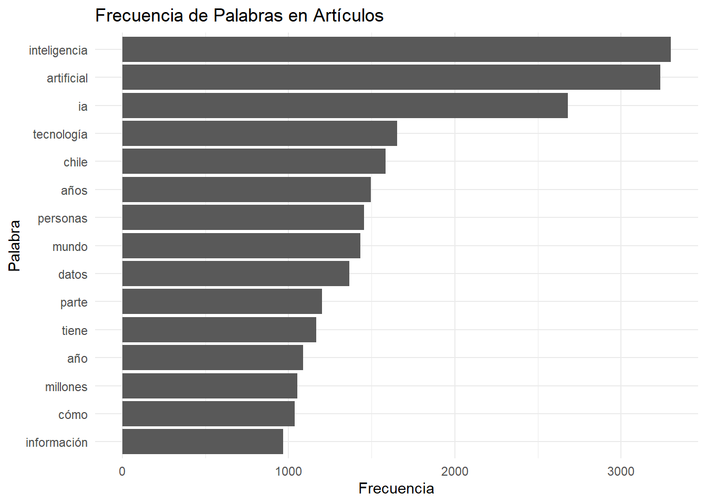
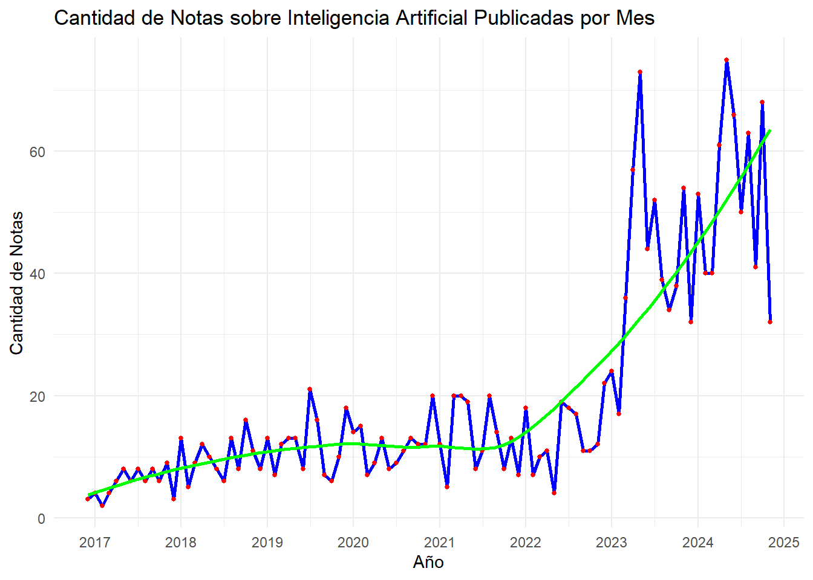
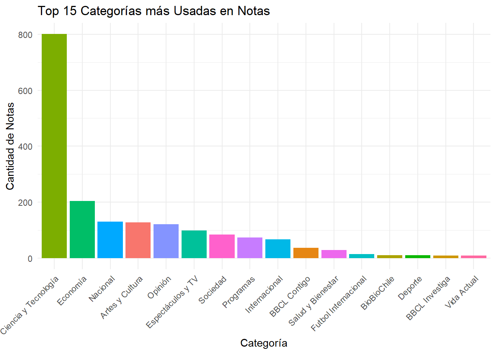

#Cargamos libreria
library(pacman)
p_load(
tidyverse,
httr,
jsonlite,
dplyr,
tidytext,
ggplot2,
rvest,
stringr,
xml2
)
rm(list = ls()) Tarea 1: scrapping
Primer trabajo metodos computacionales
Integrantes: Ismael Aguayo y Exequiel Trujillo
Relevancia de los datos
El uso de técnicas de extracción de datos por medio de APIs permite obtener grandes volúmenes de información de fuentes digitales, lo cual es particularmente valioso para las ciencias sociales, que tradicionalmente se han basado en encuestas y censos que pueden ser más costosos y limitados en tiempo y alcance.
Las técnicas de web scraping permiten explorar temas actuales y en constante cambio (mientras se publican contenidos nuevos a diario). Quienes hacen investigación en ciencias sociales necesitan adaptarse a entornos digitales dinámicos. A través de este proyecto se espera aprender a integrar y desarrollar herramientas computacionales en la recolección y análisis de datos.
La relevancia sociológica de los datos que se utilizarán se sostiene, en principio, en el elemento revolucionario y transformador que presenta una tecnología como la IA. Segundo, la utilización de medios masivos de comunicación como BíoBíocl y Emol, ambos los medios online más visitados en el país. Esto vinculado con el gran volumen de datos que se está utilizando, otorga validez y significancia a los análisis sociales que se van a realizar. Como se demostró en la introducción, la IA ha permeado el trabajo académico en muchos ámbitos, siendo de los más visitados entre estos desde la sociología, la educación y el trabajo. Sin embargo, se percibe una vacío académico en análisis constructivistas que perciban la tecnología no solo como un objeto técnico, sino uno imbricado socialmente con significados, prácticas, y con un gran impacto en la cultura; uno construido en un proceso simultáneamente técnico como social. En los medios, esta construcción es evidente, y tiene un impacto mayor en los significados construidos por los individuos tanto por su masividad como por su posición privilegiada en la sociedad como emisor de información con validez.
Contexto BíoBío y Emol
Para este proyecto, decidimos trabajar con Emol y Bío Bío, dos de los medios de noticias más conocidos en Chile y que tienen un gran impacto en cómo la gente entiende lo que pasa en el país. Nos interesa especialmente porque ambos cubren temas de política, economía, sociedad, tecnología y cultura, en particular sobre Inteligencia Artificial, lo que nos ayuda a explorar cómo se presentan y enmarcan temas importantes o de impacto como este.
Emol es parte del grupo El Mercurio, uno de los conglomerados de medios más grandes de Chile. Este medio tiene una fuerte influencia en la opinión pública y su contenido se enfoca mucho en temas económicos, políticos y empresariales. Creemos que analizar artículos de Emol nos permite ver cómo se representan ciertos sectores de la sociedad y observar el tipo de lenguaje que usan en temas sensibles o de alto interés para la gente. El medio de comunicación El Mercurio On-Line (Emol) es parte de la empresa El Mercurio S.A.P., siendo su portal digital de noticias. Nació a mediados de los 90s con el objetivo de informar a las empresas en economía y actualidad, sin embargo, debido a la competencia de La Tercera online y Terra, se convirtió en lo que es hoy, publicando el contenido de El Mercurio, La segunda y Las Últimas Noticias (Wikipedia, 2024).
Por otro lado, Bío Bío tiene un enfoque más amplio y diverso, pero sigue siendo uno de los medios más consumidos en Chile. El medio BíoBío.cl, del que se extraerán los datos del presente estudio, data de 1959. En principio era una radio, siendo la única con sede fuera de la capital. Para el año 2009 se creó la página web que se utilizará, la cual en 2020 es la página web de noticias más visitada del país, con 122 millones de usuarios únicos y 595 millones de visitas (Quiénes somos | BioBiochile, s. f.).
Ambos medios son los más visitados digitalmente en el país, estando en las posiciones primera (Emol) y segunda (BioBiocl), según el sitio web de rankings SimilarWeb (Septiembre de 2024).
Obtenemos el texto de las noticias con la búsqueda “Inteligencia Artificial” en medio Bío Bío
Se utilizó la API de búsqueda que utiliza la web de BíoBío.cl. Esta no cuenta con documentación, por lo que a prueba y error se fueron descubriendo los parámetros necesarios para automatizar el scrappeo del contenido de la web. Los headers que se utilizaron son los mismos que arroja el get cuando uno realiza una busqueda desde el navegador.
## Parámetros básicos
search_query <- "Inteligencia Artificial" # Frase a buscar
offset <- 0 # En 0 para que comience por el primer artículo, así funciona la API
# Numero de búsquedas total al ingresar la palabra clave en bíobío.cl (la API busca en múltiplos de a 20)
total_results <- 2060
all_data <- data.frame() # Creamos data.frame vacío para luego extraer los datos de la API
# Encabezados para la solicitud
headers <- c(
`User-Agent` = "Mozilla/5.0 (Windows NT 10.0; Win64; x64; rv:131.0) Gecko/20100101 Firefox/131.0",
`Accept` = "application/json, text/plain, */*",
`Referer` = "https://www.biobiochile.cl/buscador.shtml?s=inteligencia+artificial",
`Content-Type` = "application/json; charset=UTF-8"
)
## Iteramos hasta que el offset sea menor al total de resultados
while (offset < total_results) {
# Construimos el link para cada iteración
url <- paste0(
"https://www.biobiochile.cl/lista/api/buscador?offset=", offset,
"&search=", URLencode(search_query),
"&intervalo=&orden=ultimas"
)
# Se aumenta el offset para cada iteración (después de construido el link)
offset <- offset + 20
# Realizamos la solicitud y manejamos posibles errores
response <- tryCatch(
{ GET(url) },
error = function(e) {
message("Error en la conexión: ", e)
return(NULL)
}
)
# Verificamos si `response` es nulo antes de continuar
if (is.null(response)) next
# Procesamos el contenido si `response` no es nulo
data <- content(response, "text", encoding = "UTF-8")
json_data <- fromJSON(data, flatten = TRUE)
# Verificamos que el elemento `notas` existe antes de unir datos
if (!is.null(json_data$notas)) {
json_notas <- json_data$notas %>%
# Convertimos a data frame y normalizar tipos
as.data.frame(stringsAsFactors = FALSE) %>%
# Convertir columnas enteras a character, si es necesario
mutate(across(where(is.integer), as.character))
# Unimos los datos al data frame previamente realizado
all_data <- bind_rows(all_data, json_notas)
}
cat(" - Procesados - ", offset) #Mostrar progreso
} - Procesados - 20 - Procesados - 40 - Procesados - 60 - Procesados - 80 - Procesados - 100 - Procesados - 120 - Procesados - 140 - Procesados - 160 - Procesados - 180 - Procesados - 200 - Procesados - 220 - Procesados - 240 - Procesados - 260 - Procesados - 280 - Procesados - 300 - Procesados - 320 - Procesados - 340 - Procesados - 360 - Procesados - 380 - Procesados - 400 - Procesados - 420 - Procesados - 440 - Procesados - 460 - Procesados - 480 - Procesados - 500 - Procesados - 520 - Procesados - 540 - Procesados - 560 - Procesados - 580 - Procesados - 600 - Procesados - 620 - Procesados - 640 - Procesados - 660 - Procesados - 680 - Procesados - 700 - Procesados - 720 - Procesados - 740 - Procesados - 760 - Procesados - 780 - Procesados - 800 - Procesados - 820 - Procesados - 840 - Procesados - 860 - Procesados - 880 - Procesados - 900 - Procesados - 920 - Procesados - 940 - Procesados - 960 - Procesados - 980 - Procesados - 1000 - Procesados - 1020 - Procesados - 1040 - Procesados - 1060 - Procesados - 1080 - Procesados - 1100 - Procesados - 1120 - Procesados - 1140 - Procesados - 1160 - Procesados - 1180 - Procesados - 1200 - Procesados - 1220 - Procesados - 1240 - Procesados - 1260 - Procesados - 1280 - Procesados - 1300 - Procesados - 1320 - Procesados - 1340 - Procesados - 1360 - Procesados - 1380 - Procesados - 1400 - Procesados - 1420 - Procesados - 1440 - Procesados - 1460 - Procesados - 1480 - Procesados - 1500 - Procesados - 1520 - Procesados - 1540 - Procesados - 1560 - Procesados - 1580 - Procesados - 1600 - Procesados - 1620 - Procesados - 1640 - Procesados - 1660 - Procesados - 1680 - Procesados - 1700 - Procesados - 1720 - Procesados - 1740 - Procesados - 1760 - Procesados - 1780 - Procesados - 1800 - Procesados - 1820 - Procesados - 1840 - Procesados - 1860 - Procesados - 1880 - Procesados - 1900 - Procesados - 1920 - Procesados - 1940 - Procesados - 1960 - Procesados - 1980 - Procesados - 2000 - Procesados - 2020 - Procesados - 2040 - Procesados - 2060sum(is.na(all_data$post_title))[1] 0print(all_data$post_content[1]) #Ejemplo de cómo nos queda el contenido de la página[1] "<p>En un entorno de alta competitividad, la capacidad de resolver problemas y adaptarse a los cambios son esenciales para aspirar a puestos en empresas como Meta, Microsoft o Google. Para alcanzar esa meta profesional, es necesario desarrollar <span class=\"destacador\">tanto habilidades técnicas avanzadas como la capacidad para enfrentar desafíos.</span></p>\n<p>Estas compañías buscan profesionales con competencias que demuestren tanto excelencia en el <strong>dominio técnico</strong> como la capacidad de <strong>innovar y adaptarse</strong> a un entorno en constante evolución. Para Camila Bouchon, Revenue Manager Latam de Le Wagon, “uno de los pilares de estas competencias es <strong>el desarrollo de software y la programación”.</strong></p>\n<h2>Lenguajes de programación y ciencia de datos</h2>\n<p>“Las empresas valoran especialmente el dominio de lenguajes de programación como <strong>Python, C++, y JavaScript,</strong> además de experiencia en frameworks y bibliotecas modernas como <strong>React y Angular</strong> para desarrollo front-end, Ruby on Rails en el back-end y TensorFlow para proyectos de inteligencia artificial” agregó.</p>\n<p>Para las grandes firmas tecnológicas es fundamental tener un dominio amplio en estos lenguajes y herramientas. La inteligencia artificial y el aprendizaje automático también ocupan un rol protagónico. </p>\n<div class=\"lee-tambien-bbcl\">\n\t<div class=\"lee-tambien-titulo\">Lee también...</div>\n\t<div class=\"lee-tambien-caja\">\n\t\t<a href=\"https://www.biobiochile.cl/noticias/ciencia-y-tecnologia/pc-e-internet/2024/09/29/ni-los-millennials-se-salvan-estudio-revela-discriminacion-por-edad-en-empresas-tecnologicas.shtml\" aria-label=\"lee también\">\n\t\t\t<div class=\"lee-tambien-img lazy\" style=\"background-image: url(https://media.biobiochile.cl/wp-content/uploads/2024/09/millennials-trabajo-320x190.jpg);\"></div>\n\t\t</a>\n\t\t<a href=\"https://www.biobiochile.cl/noticias/ciencia-y-tecnologia/pc-e-internet/2024/09/29/ni-los-millennials-se-salvan-estudio-revela-discriminacion-por-edad-en-empresas-tecnologicas.shtml\" aria-label=\"titulo de nota lee tambien\" class=\"lee-tambien-titular\">Ni los millennials se salvan: estudio revela discriminación por edad en empresas tecnológicas</a>\n\t\t<span style=\"display: none\">Domingo 29 Septiembre, 2024 | 17:36</span>\n\t</div>\n</div>\n<p>Las empresas tecnológicas buscan especialistas que puedan <strong>diseñar e implementar modelos de machine learning y deep learning,</strong> capaces de abordar problemas complejos y mejorar continuamente las aplicaciones. Las técnicas avanzadas en procesamiento de lenguaje natural (NLP), redes neuronales y visión por computadora son habilidades muy cotizadas, pues potencian las soluciones y experiencias que estas empresas desarrollan para sus usuarios.</p>\n<p>Para la experta, otra área clave es la ciencia de datos. La habilidad de interpretar y analizar grandes volúmenes de información permite a estas empresas tomar decisiones estratégicas basadas en datos. “Los profesionales con conocimientos en estadística avanzada, modelos predictivos y herramientas de análisis como <strong>SQL o Power Bi</strong> son altamente valorados, ya que contribuyen directamente a la optimización de procesos y la innovación de productos”, comentó Bouchon.</p>\n<h2>Una combinación de conocimientos técnicos y estratégicos</h2>\n<p>Respecto a los perfiles profesionales más buscados por compañías como Meta, Microsoft o Google, destacan aquellos que aportan una combinación de conocimientos técnicos y estratégicos. Los <strong>ingenieros de software,</strong> con especialización en desarrollo de aplicaciones o sistemas, son clave en estas empresas.</p>\n<p>“Hay alta demanda tanto para <strong>roles backend y frontend</strong> como para <strong>desarrolladores full-stack.</strong> Los científicos y analistas de datos también son imprescindibles, ya que sus insights son fundamentales para orientar las decisiones de negocio. <strong>Los especialistas en inteligencia artificial y machine learning</strong> ocupan un lugar central en la era de la automatización y la inteligencia avanzada”, explica Bouchon.</p>\n<div class=\"lee-tambien-bbcl\">\n\t<div class=\"lee-tambien-titulo\">Lee también...</div>\n\t<div class=\"lee-tambien-caja\">\n\t\t<a href=\"https://www.biobiochile.cl/noticias/economia/negocios-y-empresas/2024/08/27/trabajadores-de-microsoft-filtraron-sus-sueldos-en-eeuu-los-puestos-de-ia-son-de-lo-mejor-pagado.shtml\" aria-label=\"lee también\">\n\t\t\t<div class=\"lee-tambien-img lazy\" style=\"background-image: url(https://media.biobiochile.cl/wp-content/uploads/2024/08/microsoft-sueldos-320x190.jpg);\"></div>\n\t\t</a>\n\t\t<a href=\"https://www.biobiochile.cl/noticias/economia/negocios-y-empresas/2024/08/27/trabajadores-de-microsoft-filtraron-sus-sueldos-en-eeuu-los-puestos-de-ia-son-de-lo-mejor-pagado.shtml\" aria-label=\"titulo de nota lee tambien\" class=\"lee-tambien-titular\">Filtraron sueldos de Microsoft en EEUU: ingenieros en software para IA son de los mejores pagados</a>\n\t\t<span style=\"display: none\">Martes 27 Agosto, 2024 | 16:17</span>\n\t</div>\n</div>\n<p>Finalmente, estudiar en programas intensivos, como los <strong>bootcamps,</strong> es una opción efectiva para adquirir competencias prácticas en áreas clave como <strong>desarrollo web, ciencia de datos e inteligencia artificial. </strong></p>\n<p>Además, el <strong>networking</strong> es otro elemento clave. Asistir a eventos de la comunidad tecnológica, hackatones y conferencias permite a los aspirantes <strong>conocer a otros profesionales y establecer contactos</strong> que pueden abrirles puertas en estas empresas.</p>\n<p><strong>“El desarrollo de habilidades blandas es esencial.</strong> Empresas como Meta, Microsoft y Google valoran la comunicación efectiva, el trabajo en equipo y la adaptabilidad”, aseguró Camila Bouchon.</p>\n"Sacamos un data frame con las columnas que nos interesen
datos_proc <- all_data %>%
select(
post_content, ID, post_title, year, month, day, post_category_primary.name, post_category_secondary.name
)
# Después de ejecutar el bucle y extraer todos los datos
# Actualizamos "total_results" con el número total de filas en el data frame final
total_results <- nrow(datos_proc)
# Confirmación de la actualización
cat("El número total de resultados obtenidos es:", total_results, "\n")El número total de resultados obtenidos es: 2060 Limpieza de las secciones “Lee también…”, Instagram y Twitter
Aparecen algunos bloques html que ponen noticias como recomedación para leer y pueden contener las palabras “inteligencia artificial” sin que el contenido de la nota se refiera específicamente a eso. Para ello podemos usar el paquete rvest. Lo mismo haremos con los bloques que tienen publicaciones de X (ex Twitter) o de Instagram. Así, mantendremos solo el texto de la noticia y eliminaremos las noticias que se agregaron sin que sean relevantes.
Necesitamos una función que se dedique a encontrar esa parte del texto y eliminarla:
for (i in seq_len(nrow(datos_proc))){
# Convertimos el contenido a un objeto HTML para usar rvest
contenido_html <- rvest::read_html(datos_proc$post_content[[i]])
# Eliminamos los divs con la clase 'lee-tambien-bbcl'
contenido_html %>%
html_nodes("div.lee-tambien-bbcl") %>%
xml_remove()
# Eliminamos los divs de publicaciones de Instagram
contenido_html %>%
html_nodes("blockquote.instagram-media") %>%
xml_remove()
# Eliminamos los divs de publicaciones de Twitter
contenido_html %>%
html_nodes("blockquote.twitter-tweet") %>%
xml_remove()
# Convertimos el HTML limpio a texto y eliminamos cualquier "Lee también" que quede en el contenido
contenido_texto <- as.character(contenido_html)
contenido_texto <- str_replace_all(contenido_texto, regex("Lee también.*?<\\/div>", dotall = TRUE), "")
# Guardamos el contenido limpio de vuelta en el data frame
datos_proc$post_content[[i]] <- contenido_texto
#Revisamos el contenido HTML resultante (opcional)
# print(as.character(contenido_html))
}Ahora eliminamos todas las notas que no mencionen Inteligencia Artificial por lo menos una vez:
datos_proc <- datos_proc %>%
filter(grepl("inteligencia artificial", post_content, ignore.case = TRUE))
# Actualizamos "total_results" con el número total de filas en el data frame final
total_results <- nrow(datos_proc)
# Confirmación de la actualización
cat("El número total de resultados obtenidos es:", total_results, "\n")El número total de resultados obtenidos es: 1885 También podemos exportar como html para ver si desaparecieron los bloques completos
# Seteamos nombre archivo salida
out_file <- "noticia_casi.html"
# Exportamos el contenido HTML de una nota aleatoria
writeLines(as.character(datos_proc$post_content[sample(1:total_results, 1)]), con = out_file)
# Mensaje de confirmación
cat("El contenido en bruto se ha exportado a", out_file) El contenido en bruto se ha exportado a noticia_casi.htmlLimpieza de texto general
Eliminamos la parte de código que queda en el texto para convertirlo en texto plano.
# Inicializamos variables
contador <- 1
html_content <- list() # Lista para hacer nodos html
# Procesar el HTML y extraer el texto
while (contador <= total_results) {
# Convertir a nodo HTML
html_content[[contador]] <- read_html(datos_proc$post_content[[contador]])
# Extraemos y limpiamos el texto
datos_proc$post_content[[contador]] <- html_content[[contador]] %>%
html_text2() %>%
str_squish()
contador <- contador + 1
}Descriptivos de frecuencia de palabras
# Esto nos sirve sobre todo para saber si se nos coló algún bloque de código
# Seleccionamos solo la columna de texto que nos interesa
text_data <- datos_proc %>% select(post_content)
# Tokenizamos el texto y lo dividimos en palabras
words <- datos_proc %>%
unnest_tokens(word, post_content)
# Cantidad de palabras extraídas
nrow(words)[1] 1028714# Cargar palabras comunes en español
data("stop_words") # Cargar palabras comunes en inglés (desde tidytext)
stop_words_es <- tibble(word = c("el", "la", "de", "y", "en", "que", "a", "los", "con", "por", "lee", "las", "para", "se", "es", "su", "del", "una", "al", "como", "más", "lo", "este", "sus", "esta", "también", "entre", "fue", "han", "un", "sin", "sobre", "ya", "pero", "no", "muy", "si", "porque", "cuando", "desde", "todo", "son", "ha", "hay", "le", "ni", "cada", "me", "tanto", "hasta", "nos", "mi", "tus", "mis", "tengo", "tienes", "esa", "ese", "tan", "esa", "esos", "esa", "esas", "él", "ella", "ellos", "ellas", "nosotros", "vosotros", "vosotras", "ustedes", "uno", "una", "unos", "unas", "alguien", "quien", "cual", "cuales", "cualquier", "cualesquiera", "como", "donde", "cuanto", "demasiado", "poco", "menos", "casi", "algunos", "algunas", "aunque", "cuyo", "cuya", "cuyos", "cuyas", "ser", "haber", "estar", "tener", "hacer", "ir", "ver", "dar", "debe", "debido", "puede", "pues", "dicho", "hecho", "mientras", "luego", "además", "entonces", "así", "tal", "dicha", "mismo", "misma", "demás", "otro", "otra", "otros", "otras", "debería", "tendría", "podría", "menos", "cuándo", "dónde", "qué", "quién", "cuyo", "la", "lo", "las", "que", "está", "según", "esto"))
# Filtramos las stop words del texto
words_clean <- words %>%
anti_join(stop_words, by = "word") %>%
anti_join(stop_words_es, by = "word")
# Calculamos frecuencia de palabras
word_counts <- words_clean %>%
count(word, sort = TRUE)
# Ver las 10 palabras más frecuentes
head(word_counts, 10) word n
1 inteligencia 3299
2 artificial 3237
3 ia 2681
4 tecnología 1653
5 chile 1585
6 años 1496
7 personas 1454
8 mundo 1431
9 datos 1367
10 parte 1202# Graficamos las palabras más frecuentes
word_counts %>%
filter(n > 10) %>%
slice_max(n, n = 15) %>%
ggplot(aes(x = reorder(word, n), y = n)) +
geom_col() +
coord_flip() +
labs(title = "Frecuencia de Palabras en Artículos",
x = "Palabra", y = "Frecuencia") +
theme_minimal()
Se visualiza como luego de limpiar el texto y omitir palabras que no interesan, las palabras más utilizadas son: inteligencia, artificial, IA, tecnología y Chile. Cabe destacar la aparición alta de palabras como datos e información.
Descriptivo cantidad de notas por meses
# Agrupamos los datos por año y mes, y contar las publicaciones
publicaciones_por_mes <- datos_proc %>%
group_by(year, month) %>%
summarise(cantidad = n(), .groups = 'drop') %>%
mutate(fecha = as.Date(paste(year, month, "01", sep = "-"))) # Crear una fecha para el eje x
# Creamos el gráfico
ggplot(publicaciones_por_mes, aes(x = fecha, y = cantidad)) +
geom_line(color = "blue", linewidth = 1) + # Línea de publicaciones
geom_point(color = "red", size = 1) + # Puntos en cada mes
geom_smooth(method = "loess", color = "green", se = FALSE, linewidth = 1) + # Curva de tendencia
labs(title = "Cantidad de Notas sobre Inteligencia Artificial Publicadas por Mes",
x = "Año",
y = "Cantidad de Notas") +
theme_minimal() +
scale_x_date(date_labels = "%Y", date_breaks = "1 year") # Mostrar solo los años en el eje x`geom_smooth()` using formula = 'y ~ x'
Se visualiza un aumento exponencial de noticias que se condice con el boom de la inteligencia artificial (IA) a fines del 2022 por la salida de ChatGPT. Luego hay picos altos y bajos, sin embargo nunca se vuelve a la frecuencia antes del boom inicial. Podría ser interesante investigar las fechas de los picos altos para ver si ocurrieron hechos importantes en relación a la IA.
Descriptivo cantidad de notas por categoría
# Contamos las publicaciones por categoría
publicaciones_por_categoria <- datos_proc %>%
group_by(post_category_primary.name) %>%
summarise(cantidad = n(), .groups = 'drop') %>%
arrange(desc(cantidad))
# Filtramos para quedarnos con las 15 categorías más usadas
top_15_categorias <- publicaciones_por_categoria %>%
top_n(15, cantidad)
# Gráfico de Barras para las 15 categorías más usadas
ggplot(top_15_categorias, aes(x = reorder(post_category_primary.name, -cantidad), y = cantidad, fill = post_category_primary.name)) +
geom_bar(stat = "identity") +
labs(title = "Top 15 Categorías más Usadas en Notas",
x = "Categoría",
y = "Cantidad de Notas") +
theme_minimal() +
theme(axis.text.x = element_text(angle = 45, hjust = 1),
legend.position = "none")
Como era de esperarse, el tema más recurrente es Ciencia y Tecnología, seguido de Economía, Nacional, Artes y Cultura y Opinión.
Web-scrapping utilizando la API de Emol
Lo que sigue de aquí en adelante se encuentra incompleto, sin embargo, se consideró relevante incluirlo en la entrega para poder recibir una retroalimentación. El procedimiento es el mismo: se encontró una API no documentada que utiliza el buscador de Emol. Luego se fueron descubriendo a prueba y error los parámetros necesarios para iterar. La mayor complicación que se tuvo es que la estructura de datos que entrega la API difiere mucho en este caso. La API entrega las noticias agrupadas de diez en diez.
search_query <- "Inteligencia Artificial" # Palabra clave para obtener los artículos
from <- 0 # Seteamos en 0 para que comience por el primer artículo
total_results <- 300 # Numero de búsquedas total al ingresar la palabra clave en emol.cl
procesados <- 0
all_data_emol <- list() # Creamos lista vacía para almacenar todo el contenido (por el formato del JSON no se puede utilizar un data frame)
combine_lists <- function(...) {
combined_list <- c(...)
return(combined_list)
} #Creamos función para combinar listas
## Iteramos hasta que el from sea menor al total de resultados
while (from < total_results) {
# Construimos el link para cada iteración (lo más importante es que el from vaya aumentando)
url <- paste0(
"https://newsapi.ecn.cl/NewsApi/emol/buscador/emol,inversiones,mediosregionales,legal,campo,blogs,guioteca,elmercurio-digital,emoltv,lasegundaprint,revistalibros,mercuriodeportes?q=inteligencia%20artificial&size=10&from=", from
)
from <- from + 10 # Se aumenta el from para cada iteración (después de que se construya el link)
response <- tryCatch(
{ GET(url) },
error = function(e) {
message("Error en la conexión: ", e)
return(NULL)
}
)
if (is.null(response)) next
data1 <- content(response, "text", encoding = "UTF-8") # Transformamos el cuerpo de "response" en texto en formato UTF-8
json_data1 <- fromJSON(data1, flatten = FALSE) #Convertimos el JSON en una lista leíble en R
data2 <- list(c(json_data1[["hits"]][["hits"]][["_source"]][["texto"]]))
all_data_emol <- combine_lists(all_data_emol, data2) # Fucionamos todas las listas
procesados <- procesados +10 # Contador
print(procesados)
}[1] 10
[1] 20
[1] 30
[1] 40
[1] 50
[1] 60
[1] 70
[1] 80
[1] 90
[1] 100
[1] 110
[1] 120
[1] 130
[1] 140
[1] 150
[1] 160
[1] 170
[1] 180
[1] 190
[1] 200
[1] 210
[1] 220
[1] 230
[1] 240
[1] 250
[1] 260
[1] 270
[1] 280
[1] 290
[1] 300textos_df <- tibble(texto = unlist(all_data_emol)) #Convertimos la lista en data frameReferencias
EMOL. (2024). En Wikipedia, la enciclopedia libre.https://es.wikipedia.org/w/index.php?title=EMOL&oldid=160302426
Quiénes somos | BioBiochile. (s. f.). Recuperado 4 de noviembre de 2024, dehttps://www.biobiochile.cl/quienes-somos/
Clasificación de los principales sitios web de Editoriales de noticias y medios de comunicación en Chile en septiembre 2024. (s. f.). Similarweb. Recuperado 4 de noviembre de 2024, dehttps://www.similarweb.com/es/top-websites/chile/news-and-media/